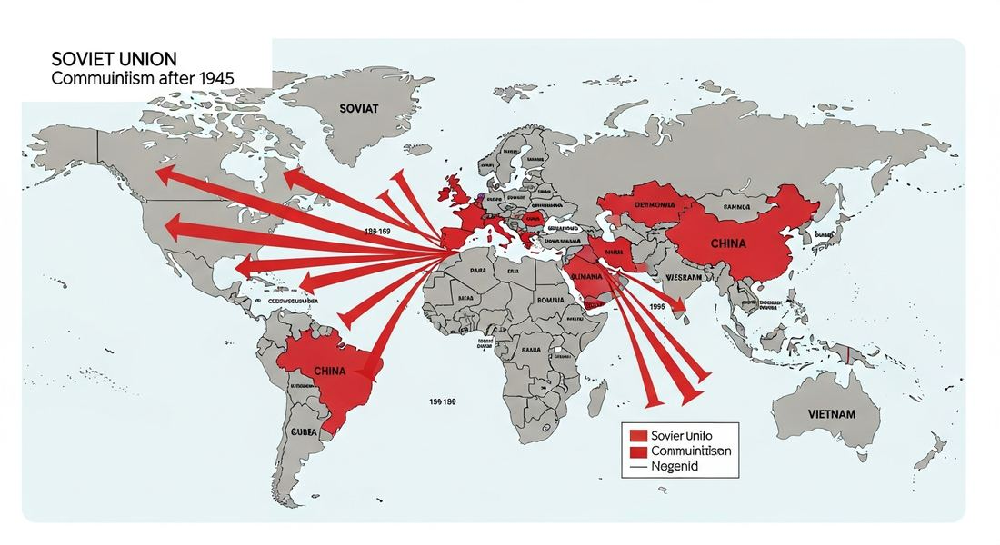

8.4 Spread of Communism After 1900
- LO-A: China went communist in 1949 — and it changed everything — The Chinese Communist Party (Mao Zedong) defeated the US-backed Nationalists after a civil war, bringing communism to the world's most populous country. This "loss of China" shocked the West and intensified Cold War competition across Asia. The Great Leap Forward (1958–62) was a catastrophic experiment — Mao's attempt to rapidly industrialize China through collective farming and backyard steel production failed catastrophically — causing a famine that killed an estimated 15–45 million people. It is one of the deadliest government-caused disasters in history. Land redistribution was a major communist/socialist appeal worldwide — In countries with massive inequality — where peasants worked land owned by a tiny elite — communist and socialist promises of land reform had enormous appeal. This drove movements in Vietnam, Ethiopia, India (Kerala), and Iran (White Revolution). Two LOs, two themes — LO D focuses on China's communist revolution specifically. LO E broadens to land/resource redistribution movements worldwide — communist, socialist, and sometimes nationalist. Know both sets of illustrative examples.
Try each question before revealing the answer.
1. Why did the Chinese Communist Party win the Chinese Civil War? What advantages did they have over the Nationalists (Guomindang)?
2. Why would communist and socialist promises of "land reform" appeal to peasants in Africa, Asia, and Latin America?
3. What was the "White Revolution" in Iran, and why is it interesting that a right-wing, pro-Western monarchy pursued land reform?
- Explain the causes and effects of communist revolutions and resource redistribution movements after 1945 — including the Chinese Communist Revolution, the Great Leap Forward, and land reform movements in Africa, Asia, and Latin America
Tap a term for its definition.
-
Definition: Conflict between the Chinese Communist Party (Mao Zedong) and the Nationalist Guomindang (Chiang Kai-shek), interrupted by WWII and resumed 1945–49, ending in communist victory. Significance: Brought communism to 600 million people and transformed Cold War dynamics across Asia.
-
Definition: Leader of the Chinese Communist Party who founded the People's Republic of China (1949) and ruled until his death in 1976. Significance: Implemented radical policies including the Great Leap Forward and Cultural Revolution; his brand of communism ("Maoism") influenced leftist movements worldwide.
-
Definition: Mao's campaign to rapidly industrialize China through collectivization and mass mobilization — including backyard steel furnaces and collective farming. Significance: CED required example of communist government controlling the economy through repressive policies; caused a famine killing an estimated 15–45 million people, one of history's worst.
-
Definition: Government policy of consolidating individual land holdings into collective farms owned and operated by the state or farming communes. Significance: Central tool of communist agrarian policy; implemented in the USSR under Stalin and China under Mao, often through coercion and with devastating consequences for food production.
-
Definition: The Viet Minh (League for Vietnamese Independence), led by Ho Chi Minh, fought for Vietnamese independence from France and Japan using communist organization. Significance: CED illustrative example — Communist Revolution for Vietnamese independence; led to the First Indochina War (1946–54) and set the stage for the Vietnam War.
-
Definition: Ethiopian military officer who led a Marxist-Leninist coup (1974/77), overthrew Emperor Haile Selassie, and implemented collectivization and land redistribution during his brutal Derg regime. Significance: CED illustrative example for land/resource redistribution; his regime killed hundreds of thousands through political repression and famine.
-
Definition: Kerala state in India implemented radical land reform through democratic politics — the Communist Party of India won state elections in 1957 and began redistributing land from landlords to tenants. Significance: CED illustrative example; remarkable because it was communist-style land reform achieved through democratic elections, not revolution — a unique case.
-
Definition: Shah Mohammad Reza Pahlavi's modernization program (1963) including land redistribution, women's suffrage, and nationalization — designed to undercut communist appeal and modernize Iran. Significance: CED illustrative example; illustrated how land reform was used by a right-wing, pro-Western government to prevent communist revolution — not just by communists themselves.
🇨🇳 China's Communist Revolution: Causes — KC-6.2.I.i
The AP CED states: "As a result of internal tension and Japanese aggression, Chinese communists seized power. These changes in China eventually led to communist revolution." Let's trace these causes carefully.
Internal tensions: The Guomindang (Nationalist Party) government under Chiang Kai-shek was deeply unpopular. Rampant corruption, catastrophic hyperinflation (the Nationalist currency lost 80% of its value between 1945–49), failure to address rural poverty, and brutal suppression of dissent alienated virtually every segment of Chinese society. The urban middle class that Chiang claimed to represent had been devastated by inflation; the peasantry had been ignored or exploited for decades.
Japanese aggression: Japan's full-scale invasion of China (1937) inflicted enormous casualties and destruction. The Guomindang bore the brunt of conventional military fighting against Japan, depleting its forces and resources. The Chinese Communist Party, meanwhile, used guerrilla warfare and political organizing in rural areas — building genuine popular support through land reform, military discipline, and anti-Japanese resistance. When WWII ended, the CCP emerged stronger relative to the Guomindang than when it began.
Civil war and victory: The civil war resumed in 1945 after Japan's defeat. Despite U.S. aid to the Guomindang (approximately $2 billion), the Nationalists steadily lost territory, soldiers (who surrendered or defected en masse to the CCP), and popular support. On October 1, 1949, Mao Zedong proclaimed the People's Republic of China in Beijing. The Guomindang fled to Taiwan, where they established the Republic of China — a division that remains unresolved today.

Image credit not specified.
AI-generated illustration (Google Gemini, 2025), commercially licensed.
🏭 The Great Leap Forward: Communist Economic Control — KC-6.3.I.A.ii
After taking power, the CCP implemented radical economic transformation. Early land reform (1949–52) redistributed land from landlords to approximately 300 million peasants — an enormously popular first step. But Mao soon decided that China needed to industrialize at revolutionary speed to catch up with Western powers.
The Great Leap Forward (1958–1962) was Mao's catastrophic attempt to accomplish this. It had two main components:
- Agricultural collectivization: Individual farm plots were consolidated into massive "people's communes" — units of thousands of families farming collectively. Peasants lost their private plots, tools, and animals. Agricultural decisions were made by party officials rather than experienced farmers.
- Backyard steel furnaces: Mao ordered millions of peasants to melt down metal implements — including farming tools — to produce steel in small furnaces. The steel produced was mostly unusable "pig iron," while the destruction of tools and diversion of labor from farming contributed to agricultural collapse.
The result was famine on an almost incomprehensible scale. Grain production collapsed while local officials, afraid to report bad news to Mao, falsified harvest statistics — causing the government to continue exporting grain even as people starved. Estimates of death from famine range from 15 to 45 million people in 3–4 years. The Great Leap Forward remains one of the deadliest man-made disasters in human history.
🌏 Communist Revolution for Vietnamese Independence — Illustrative Example
Vietnam's path to independence is inseparable from communism. Ho Chi Minh founded the Viet Minh (League for Vietnamese Independence) in 1941, drawing on communist organization and ideology to lead the resistance against both Japanese occupation and French colonial rule. When Japan was defeated in 1945, Ho declared Vietnamese independence — but France refused to accept it and returned to reassert colonial control.
The resulting First Indochina War (1946–1954) pitted the Viet Minh against French forces. The US provided massive financial support to France (ultimately covering 80% of France's war costs) because it feared communism spreading across Southeast Asia — the "domino theory." The Viet Minh defeated France decisively at the Battle of Dien Bien Phu (1954), ending French colonial rule. But the Geneva Accords temporarily divided Vietnam at the 17th parallel, with Ho Chi Minh's communist government in the north — setting the stage for the Vietnam War. In Vietnam, communist revolution and independence struggle were inseparable: the nationalist cause and the communist movement were led by the same organization.
🌍 Land Redistribution Movements: LO E — KC-6.2.II.D.i
Beyond China and Vietnam, the CED identifies a broader pattern: throughout Africa, Asia, and Latin America, movements to redistribute land and resources developed — sometimes communist, sometimes socialist, sometimes nationalist. Know these four illustrative examples:
Mengistu Haile Mariam in Ethiopia: In 1974, a military junta (the Derg) overthrew Emperor Haile Selassie, beginning a period of radical Marxist transformation. Mengistu Haile Mariam emerged as the dominant figure by 1977. His regime nationalized land and industry, collectivized agriculture, and launched land redistribution. It also conducted the "Red Terror" (1977–78) — a campaign of political violence that killed an estimated 500,000–750,000 people. Soviet and Cuban support kept the regime in power. Ethiopia's experience showed that land redistribution could be pursued through extreme violence and still fail — the collectivized agriculture contributed to the catastrophic famine of 1983–85 that killed over one million people.
Land Reform in Kerala, India: Kerala is remarkable because it achieved communist-style land reform through democratic means. The Communist Party of India won state elections in Kerala in 1957 — the first democratically elected communist government in history. They immediately began implementing land reform: redistributing land from landlords to tenant farmers and agricultural laborers. Though the central government dismissed the Kerala government in 1959, the land reform was eventually completed in subsequent communist state governments. Kerala's case demonstrates that land redistribution didn't require revolution — it could happen through electoral politics.
White Revolution in Iran: In 1963, Shah Mohammad Reza Pahlavi launched the "White Revolution" — a top-down modernization program that included significant land redistribution from large landowners (including religious endowments controlled by the clergy) to peasants, along with women's suffrage, nationalization of forests, and literacy programs. The Shah promoted it as a peaceful "revolution from above" that would forestall communist revolution. The land reform was partly successful in redistributing land but failed to create viable small farms or agricultural infrastructure. It also alienated the Shi'a clergy by taking their land — contributing to the conditions that produced the Islamic Revolution of 1979, which overthrew the Shah.
Nothing added yet. To attach a Google NotebookLM audio overview, video overview, or infographic to this topic: open this file — build/data/content/ap-world-history/8-4.json — and add an entry to notebookLmResources with a title and a shareable link (or paste an embed <iframe> directly into this block in the generated HTML file if you're editing the page by hand instead).
- Japanese invasion depleted Guomindang military forces while the CCP built rural support through guerrilla resistance and land reform, strengthening its position relative to the Nationalists
- Japan provided military equipment to the CCP as part of a secret anti-Guomindang alliance
- The CCP negotiated a ceasefire with Japan, allowing it to concentrate forces against the Guomindang
- Japan's defeat eliminated the only military force capable of preventing a communist takeover
- The failure to produce exportable consumer goods, reducing China's foreign exchange earnings
- A student protest movement that challenged CCP authority and required military suppression
- Widespread industrial pollution from backyard steel furnaces that damaged China's environment
- A famine that killed an estimated 15–45 million people, partly because local officials falsified harvest reports out of fear of reporting bad news to Mao
- Communist ideology was imported from the Soviet Union and imposed on an otherwise non-ideological independence movement
- Communist organization and nationalist independence were inseparably linked — the same movement pursued both goals simultaneously
- Vietnamese independence was achieved before communism was introduced by Ho Chi Minh in the 1950s
- The communist movement in Vietnam was primarily motivated by economic concerns rather than nationalist sentiment
- Communist movements in the Middle East were more successful when they worked within existing monarchies
- Democratic land reform was possible in Iran because of the Shah's commitment to liberal values
- Land redistribution was pursued by a range of political actors beyond communist movements, including pro-Western authoritarian governments seeking to forestall communist revolution
- Land redistribution in the Middle East always failed because of resistance from the clergy
- Proved that communist economic policies required authoritarian political systems to implement effectively
- Confirmed that land reform was only successful when implemented gradually over many decades
- Showed that the Soviet Union's influence extended even into democratic electoral systems in Asia
- Demonstrated that redistributive economic policies associated with communism could be implemented through democratic electoral processes, challenging the Cold War equation of communism with authoritarianism
📝 My Notes (edit this yourself — no AI needed)
This box is yours. Open this page's HTML file directly (in GitHub's editor or any text editor), find the <!-- MY-NOTES-START --> comment below, and type between the markers — corrections, extra context for this year's students, a link, anything. Changes show up as soon as you save and re-publish the file — nothing else on the page will change.
(Add your own notes, corrections, or extra context here.)